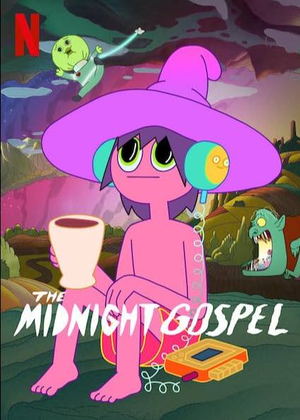

The Midnight Gospel 🤡️ TV Series
Storyline 📜️
Clancy, a spacecaster with a malfunctioning multiverse simulator, leaves
the comfort of his home to interview beings living in dying worlds.

Cast & Characters 👨👩👧👦️
Episodes 📺️
- Taste of the King
The simulator lands Clancy on a zombie-ravaged earth, where he meets the
president, who's a fan of drugs and meditation.

- Officers and Wolves
On a planet populated by baby clowns, Clancy hears a deer-dog's thoughts
on death as they head to a slaughterhouse.

- Hunters Without a Home
Clancy zaps to an underwater planet, where he crosses paths with Darryl,
a student of ceremonial magic and the path to enlightenment.

List of Episodes, its Ratings & Duration
| Episode Name |
Rating |
Duration |
| Taste of the King |
7.8/10 |
27 minutes |
| Officers and Wolves |
7.6/10 |
28.5 minutes |
| Hunters Without a Home |
7.9/10 |
30 minutes |
| Total Duration |
|
75.5 minutes |